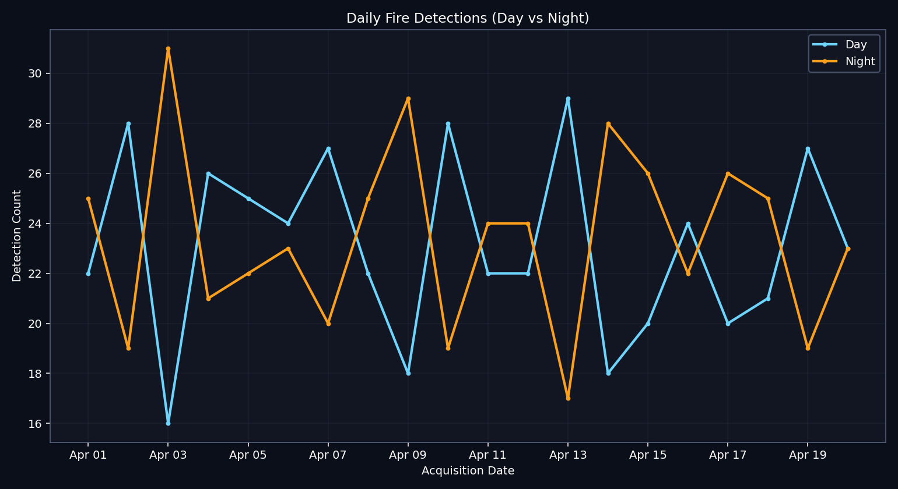
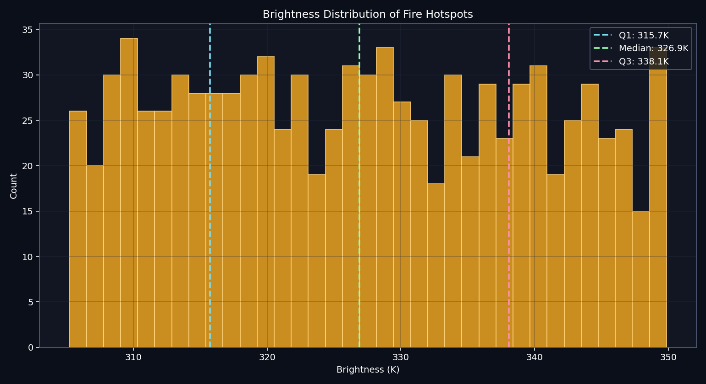
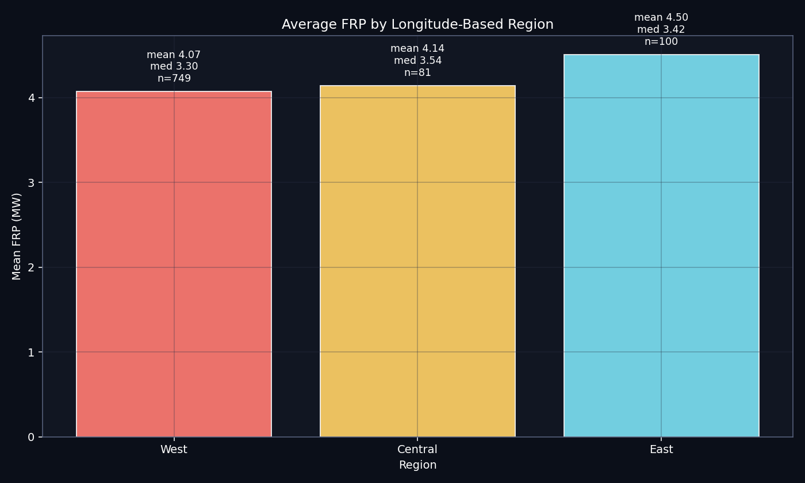
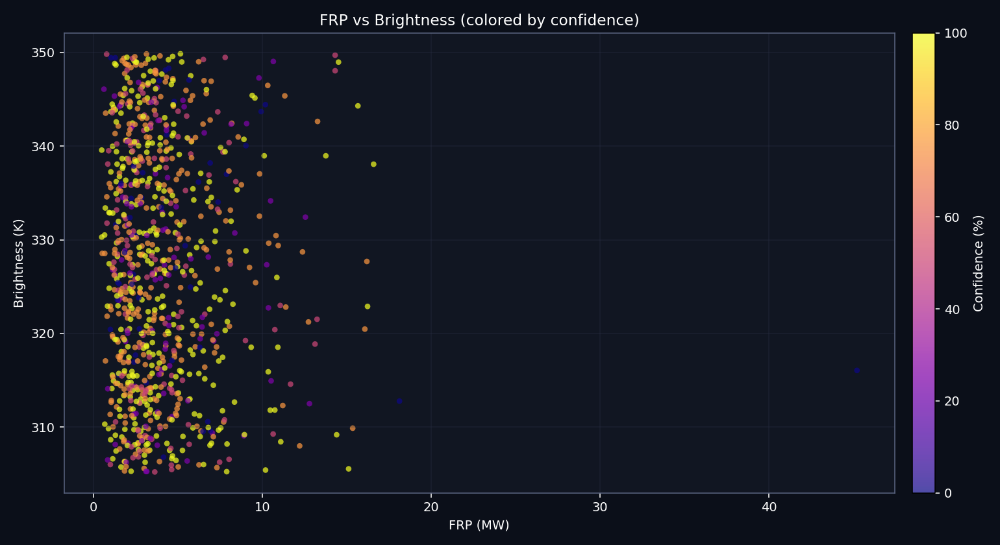
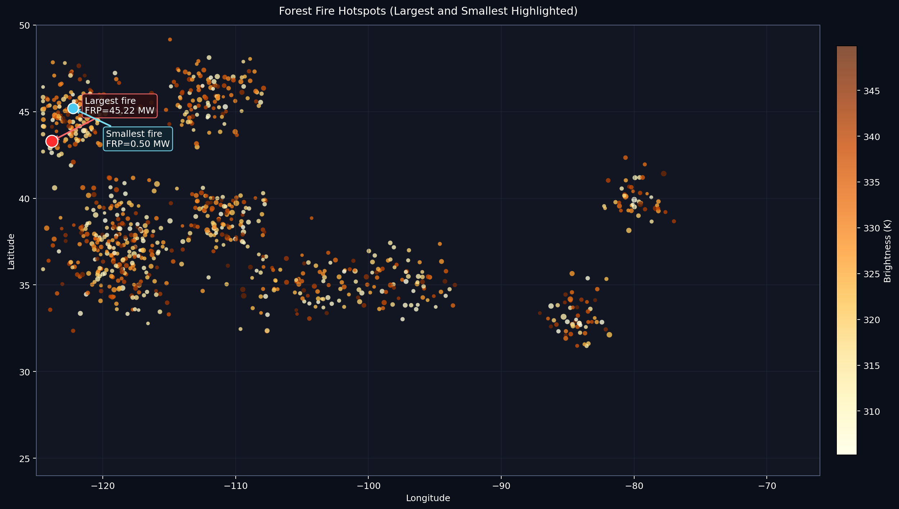
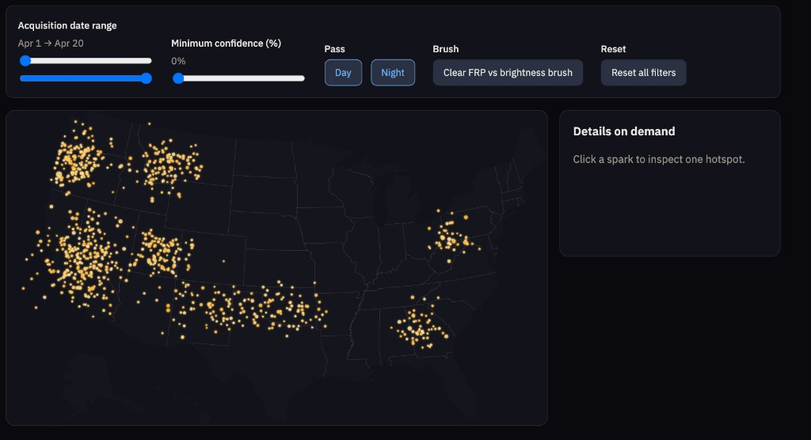

Design rationale
Question. This view supports exploration of where NASA FIRMS MODIS near-real-time thermal anomalies appear over the United States, how strongly they radiate (brightness and FRP), and how detections vary across acquisition date, satellite pass (day vs night), and reported confidence.
Marks and channels. Each detection is a point mark in geographic space, positioned
with d3.geoAlbersUsa() so relative distances on land are readable for the contiguous U.S.
Color maps mid-infrared brightness (K) to a yellow–orange ramp so hotter pixels pop without
implying categorical regions. Area (point radius) encodes fire radiative power (FRP, MW) on a
square-root scale to reduce domination by a few extreme values while still showing relative intensity.
Confidence is not mapped to color (it is easy to misread as temperature); instead it is exposed as a
dynamic query filter and in the inspector.
Alternatives considered. A state-level choropleth of counts would be legible for policy audiences but would hide within-state clustering and offshore points. A dense raster heatmap would summarize volume but would make details-on-demand harder and would still need careful tuning for overplotting. The point + filter + zoom pattern keeps raw detections addressable while supporting drill-down.
Interactions. Pan and zoom (d3.zoom) address overplotting by letting
readers magnify dense regions (for example the West Coast). Bracketing sliders on acquisition date
implement temporal dynamic queries; confidence and day/night toggles subset the table. Clicking a
point opens a details-on-demand panel with footprint context (scan × track as a rough area proxy),
supporting interpretation without hovering tooltips on a busy canvas.
Basemap styling. Land and ocean fills are SVG gradients so the frame reads as a small-scale map rather than a flat gray silhouette, while keeping implementation in D3-drawn geometry rather than raster tiles.
Creative extensions (originality)
Beyond the core map + filters, we added three deliberately linked pieces—all implemented in D3 (no extra plotting libraries):
- Temporal activity strip. A compact bar chart of per-day detection counts after confidence and day/night filters, with a translucent overlay for the currently selected date window. Clicking a day snaps both date sliders to that acquisition day so the map and summary re-focus instantly—a small multiple-view / dynamic-query hybrid.
- Live insight bullets. Short, automatically recomputed sentences summarize the filtered subset (busiest calendar day in the window, which coarse longitude band carries the plurality of points, and the strongest FRP event currently visible). These are meant as narrative anchors, not replacements for reading individual points.
- Spotlight mode. An optional crosshair on the single highest-FRP detection in the current filtered set, to draw attention to extreme events without permanently distorting the size scale for every point.
Data and transformations
Source. The assignment allows NASA MODIS-family products; this prototype uses the
NASA FIRMS MODIS near-real-time hotspot export
(MODIS_NRT). The bundled CSV under data/modis_fires_us.csv is a contiguous-U.S. subset
used for class deployment; it can be refreshed with scripts/fetch_firms_modis.py if you
supply a free FIRMS map key (see script header).
Transformations in the app. Rows are parsed in the browser (dates as Date
objects, numeric fields coerced). The visible set is the intersection of: acquisition date within the
selected min–max index range, confidence ≥ slider threshold, and day/night membership for whichever
passes remain toggled on. No rows outside that filtered subset are projected or drawn. FRP drives
radius through d3.scaleSqrt; brightness drives color through a bounded linear interpolation
in RGB space.
Exploratory analysis (static figures)
Before locking the map-centric design, we generated several static plots from the same CSV to learn scale and covariation (examples below; all produced outside the D3 app, e.g. with Python/matplotlib).






Development process
Team roster. Replace this sentence with your official Gradescope team names and UCSD emails before submission: [Team name] — member 1, member 2, …
Division of labor (template). Describe who owned data pulls/cleaning, exploratory plots, D3 map + canvas layer, layout/CSS, GitHub Pages deploy, and write-up editing. If you worked solo, say so explicitly.
Time and friction. Roughly 25–35 person-hours total across data wrangling, exploratory plotting, implementing filters and zoom, aligning SVG with canvas for crisp projection, polishing layout for small screens, and writing this rationale. The longest arc was iteration on interaction polish (hit targets, resize behavior, and keeping the map readable when many points overlap). Adding the linked timeline, live insight sentences, and optional FRP spotlight took additional design and testing time.
Implementation constraints. The interactive graphic uses D3 v7 and topojson-client for the basemap only. No Plotly, Vega-Lite, or other high-level plotting libraries are used in this page.
Repository and deployment
Source for this submission lives in
github.com/shreybe/A-Song-of-Ice-and-Fire.
Enable GitHub Pages from the main branch (root folder). The public URL will be
shreybe.github.io/A-Song-of-Ice-and-Fire
once Pages finishes building.